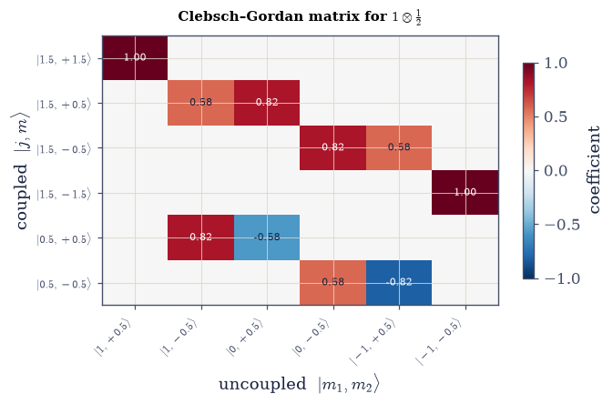
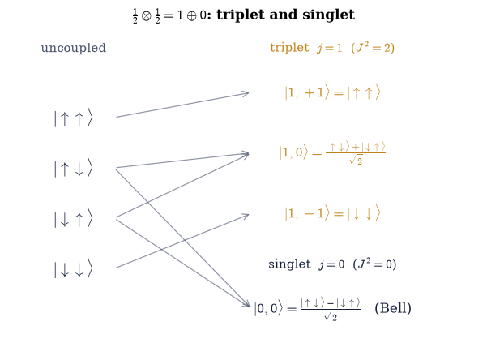
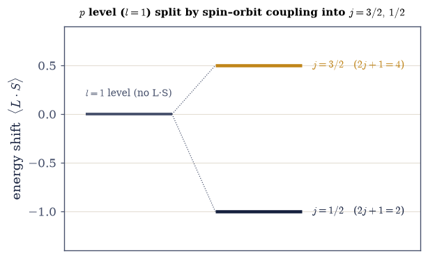

6.19 Addition of Angular Momenta and Clebsch–Gordan Coefficients#
Notebook overview#
The previous notebook ended on an open problem. Spin–orbit coupling contributes an energy \(\propto\mathbf L\cdot \mathbf S\), and to evaluate it we needed the eigenstates of \(J^2=(\mathbf L+\mathbf S)^2\) — we needed to know how to add two angular momenta. That is this notebook, and it is a tool we will use again and again: any time a system carries two angular momenta (two spins, a spin and an orbit, two orbits), the individual pieces can trade angular momentum back and forth, but their total \(\mathbf J=\mathbf J_1+ \mathbf J_2\) is conserved and labels the states.
The structure is rigid and beautiful. A product space of dimension \((2j_1+1)(2j_2+1)\) reorganizes into multiplets of definite total \(j\) running from \(|j_1-j_2|\) to \(j_1+j_2\) (the triangle rule), each appearing exactly once, each of dimension \(2j+1\) — and the dimensions add up. There are two natural bases: the uncoupled basis \(|j_1,m_1\rangle|j_2,m_2\rangle\), in which each part is sharp, and the coupled basis \(|j,m\rangle\), in which the total is sharp. The Clebsch–Gordan coefficients are the overlaps \(\langle j_1 m_1 j_2 m_2|j m\rangle\) that transform between them.
In a traditional course this is where one learns to read tables of Clebsch–Gordan coefficients out of the back of a book. We invert that entirely, in the spirit of the whole volume: there is no table — the coupled states are simply the eigenvectors of \(J^2\) and \(J_z\), and the coefficients are their components in the uncoupled basis, handed to us by the computer. We do it two ways and watch them agree: by diagonalizing \(J^2\) in the product space (fast, general), and by the ladder construction (start from the top state and lower, the §6.12/§6.14 method again), which fixes the standard Condon–Shortley phase convention.
Two couplings carry all the physics we need. Two spin-\(\tfrac12\)’s combine into a singlet (\(j=0\), antisymmetric) and a triplet (\(j=1\), symmetric) — and the singlet is a maximally-entangled Bell state, like the \((|00\rangle+|11\rangle)/\sqrt2\) of §6.8, so angular-momentum coupling and entanglement turn out to be the same mathematics, while the exchange symmetry (symmetric triplet, antisymmetric singlet) is the seed of the Pauli principle that the next notebook makes into law. And an orbital \(l\) coupled to spin \(\tfrac12\) gives \(j=l\pm\tfrac12\), in which \(\mathbf L\cdot\mathbf S=\tfrac12(J^2-L^2-S^2)\) is finally diagonal — resolving the open problem of §6.18 and setting up the fine structure of §6.21.
As in every Volume VI notebook, each exercise opens with a crystal-clear statement and enumerated parts, each naming the exact operation — the §6.14 angular_momentum_matrices, numpy.kron to build
\(\mathbf J_1\otimes I+I\otimes\mathbf J_2\), numpy.linalg.eigh to diagonalize \(J^2\), the total lowering
operator \(J_-=J_{1-}+J_{2-}\) for the ladder, and the Clebsch–Gordan coefficients read off as eigenvector
components.
Conventions. \(\hbar=1\). The uncoupled product basis is ordered by
numpy.kron: index \(i_1(2j_2+1) +i_2\) with \(m_1=j_1-i_1\), \(m_2=j_2-i_2\) (descending \(m\)). We fix each coupled state’s overall phase by a Condon–Shortley-style convention (its first significant component is positive real); the ladder construction produces this convention naturally, and we align the diagonalization to it. Scope: we cover the decomposition rule, the two construction methods, the coefficients, and the two anchor cases (\(\tfrac12\otimes\tfrac12\) and \(l\otimes\tfrac12\)); the Wigner–Eckart theorem, the 3j/6j symbols, tensor operators, and coupling three or more angular momenta are named as horizons, not developed. See Sakurai & Napolitano (§3.8) and Griffiths; and Notebooks §6.14 (the matrices/ladder), §6.8 (entanglement/Bell), §6.18 (spin, the \(\mathbf L\cdot\mathbf S\) question), §6.6 (compatible observables).
Theory in brief#
Why total angular momentum#
For two parts with angular momenta \(\mathbf J_1,\mathbf J_2\), the individual components are generally not conserved (they exchange angular momentum, e.g. through \(\mathbf L\cdot\mathbf S\)), but the total is:
which generates rotations of the whole system. So the good quantum numbers are those of \(J^2\) and \(J_z\)
(built from the §6.14 matrices with numpy.kron).
The two bases and the decomposition rule#
The uncoupled basis \(|j_1,m_1\rangle\otimes|j_2,m_2\rangle\) diagonalizes \(J_1^2,J_2^2,J_{1z},J_{2z}\) (each part sharp); the coupled basis \(|j_1,j_2;j,m\rangle\) diagonalizes \(J_1^2,J_2^2,J^2,J_z\) (the total sharp). Both span the same product space, and it decomposes as
the triangle rule: each total \(j\) from \(|j_1-j_2|\) to \(j_1+j_2\) appears once, and since \(J_z\) eigenvalues add (\(m=m_1+m_2\)), counting how many uncoupled states have each \(m\) pins down which multiplets appear.
The Clebsch–Gordan coefficients#
The coupled states expand in the uncoupled basis,
and the coefficients \(\langle j_1 m_1 j_2 m_2|j m\rangle\) are the Clebsch–Gordan coefficients — the entries of the unitary change-of-basis matrix, i.e. the components of the coupled eigenvectors in the uncoupled basis. No table is needed.
Method 1 — diagonalize \(J^2\)#
The coupled states are defined as joint eigenvectors of \(J^2\) and \(J_z\), so the first method is the most direct one imaginable: pose the eigenvalue problem in the uncoupled product basis and let the computer solve it, schematically
Build \(J^2\) in the product space and diagonalize (simultaneously with \(J_z\)); group the eigenvectors by their \(J^2\) eigenvalue \(j(j+1)\) and \(J_z\) eigenvalue \(m\); their uncoupled components are the coefficients.
Method 2 — the ladder construction#
The second method trades the eigensolver for the angular-momentum algebra itself: the same lowering operator that walked down each multiplet in §6.12 and §6.14 also walks down the coupled multiplets, once a coupled state is in hand to start from (§3.8 of Sakurai & Napolitano gives the general construction). Its two ingredients are
the stretched state is unique (highest \(m\)); apply \(J_-\) to descend its ladder, and the next multiplet’s top state is the combination at that \(m\) orthogonal to what is already built. Repeating constructs every coupled state and reproduces the Condon–Shortley convention — the §6.12/§6.14 ladder, now for coupling. We show it agrees with Method 1.
The two anchor cases#
The smallest nontrivial coupling, two spin-\(\tfrac12\)’s, already carries most of the physics we need. The triangle rule allows exactly \(j=1\) and \(j=0\) (dimensions \(3+1=4\)), and either method above delivers their states:
the triplet (\(J^2=2\)) symmetric, the singlet (\(J^2=0\)) antisymmetric and a maximally-entangled Bell state, like the \((|00\rangle+|11\rangle)/\sqrt2\) of §6.8. And for an orbital coupled to spin (expanding \(J^2=(\mathbf L+\mathbf S)^2\) gives the identity),
diagonal in the coupled basis — the \(\mathbf L\cdot\mathbf S\) of §6.18, now evaluated, and the fine-structure splitting of §6.21.
Setup#
Data and instruments only: the series palette, the single-\(j\) matrices \(J_x,J_y,J_z,J^2,J_\pm\)
built from scratch in §6.14 and restated here, the phase
convention that fixes each coupled state’s overall sign, the ordering of the numpy.kron
product basis, and the spin–orbit operator \(\mathbf L\cdot\mathbf S\) carried over from
§6.18. Everything this notebook is named for is deliberately absent:
you write the total operators total_J in Exercise 1, the diagonalization route
couple_by_diagonalization in Exercise 2, the Clebsch–Gordan matrix cg_matrix in
Exercise 3, and the ladder route couple_by_ladder in Exercise 4 — and every later exercise
runs on the ones you wrote.
The Setup below holds this notebook’s data and instruments — nothing you are asked to build. It is collapsed so the building stays yours; expand it whenever you want the details.
Exercise 1 — Total angular momentum in the product space#
Adding two angular momenta is, first of all, an act of arithmetic on operators that live in
different spaces. \(\mathbf J_1\) acts on the \((2j_1+1)\)-dimensional space of the first part and
\(\mathbf J_2\) on the \((2j_2+1)\)-dimensional space of the second, so before they can be added each
must be extended to the product space by padding it with the other’s identity — that is what
\(\mathbf J=\mathbf J_1\otimes I+I\otimes\mathbf J_2\) Eq. 595 means, and numpy.kron is
the padding. Everything downstream is built on these operators, so this is the notebook’s first
and most consequential construction. The physics it is meant to expose is the one that makes the
whole subject necessary: \(J^2\) commutes with \(J_z\), so the total has sharp quantum numbers,
but it does not commute with \(J_{1z}\), so the parts do not Eq. 596.
Write
total_J(j1, j2), returning \(J_x,J_y,J_z,J^2,J_-\) on the \((2j_1+1)(2j_2+1)\)-dimensional product space: take the Setup’s §6.14angular_momentum_matricesfor each part, pad each with the other’s identity usingnumpy.kron, add the pairs, and form \(J^2=J_x^2+J_y^2+J_z^2\) by matrix multiplication. Write this one yourself — the implementation is the lesson.Build the total operators for, say, \(j_1=1\) and \(j_2=\tfrac12\); note that the uncoupled basis diagonalizes \(J_{1z},J_{2z}\) while the coupled basis diagonalizes \(J^2,J_z\).
Compute \([J^2,J_z]\) and \([J^2,J_{1z}]\), padding \(J_{1z}\) alone with the second part’s identity.
Confirm the first vanishes and the second does not — \(m_1\) is not a good quantum number for the total. The total is conserved; the parts are not.
coupling j1=1.0 ⊗ j2=0.5 in a 6-dimensional product space:
‖[J², Jz]‖ = 0.00e+00 → J² and Jz share the coupled basis
‖[J², J₁z]‖ = 2.83e+00 → m₁ is NOT sharp in the coupled basis
Validation 1#
✓ J²=(J₁+J₂)² commutes with Jz but not with J₁z — the total angular momentum, not its parts, labels the coupled states
True
Exercise 2 — The decomposition rule and dimension counting#
The coupled states are defined as joint eigenvectors of \(J^2\) and \(J_z\), so the most direct route to them is to pose that eigenvalue problem in the product basis and let the computer solve it Eq. 598. Two practicalities make it work. First, \(J^2\) alone is massively degenerate — every state of a multiplet shares its eigenvalue — so diagonalizing \(J^2+c\,J_z\) with an irrational \(c\) (say \(1/\pi\)) lifts the degeneracy without disturbing the eigenvectors: the two operators commute, so they share eigenvectors, and no two combinations \(j(j+1)+cm\) can collide by accident. Second, an eigenvector’s labels are recovered from its own expectation values, \(\langle J^2\rangle=j(j+1)\) inverted by the quadratic formula \(j=\tfrac12(-1+\sqrt{1+4\langle J^2\rangle})\) and \(\langle J_z\rangle=m\). Once the multiplets are in hand, their bookkeeping is the triangle rule \(j=|j_1-j_2|,\dots,j_1+j_2\) with \(\sum(2j+1)=(2j_1+1)(2j_2+1)\) Eq. 596 — a counting identity the coupling must satisfy exactly, and the acceptance test for the construction.
Write
couple_by_diagonalization(j1, j2), returning a dictionary of coupled states keyed by \((j,m)\): build the total operators with your Exercise 1total_J, diagonalize \(J^2+J_z/\pi\) withnumpy.linalg.eigh, label each eigenvector by the expectation values above (rounded to the nearest half-integer), and fix its overall sign with the Setup’s_canonical_phase. Write this one yourself — the implementation is the lesson.For several \((j_1,j_2)\) — say \(\tfrac12\otimes\tfrac12\), \(1\otimes\tfrac12\), \(1\otimes1\), \(\tfrac32\otimes\tfrac12\) — couple with it and read off the distinct \(j\) values.
Confirm they run \(|j_1-j_2|\) to \(j_1+j_2\) in integer steps.
Confirm each appears once with dimension \(2j+1\).
Confirm the dimensions sum to \((2j_1+1)(2j_2+1)\) — the triangle rule, verified.
the decomposition j₁⊗j₂ = |j₁−j₂| … j₁+j₂ (dimensions add up):
0.5 ⊗ 0.5 = 1 ⊕ 0 Σ(2j+1) = 4 = (2)(2)
1 ⊗ 0.5 = 1.5 ⊕ 0.5 Σ(2j+1) = 6 = (3)(2)
1 ⊗ 1 = 2 ⊕ 1 ⊕ 0 Σ(2j+1) = 9 = (3)(3)
1.5 ⊗ 0.5 = 2 ⊕ 1 Σ(2j+1) = 8 = (4)(2)
Validation 2#
✓ j₁⊗j₂ decomposes into multiplets |j₁−j₂| through j₁+j₂ (each once, dim 2j+1), and the dimensions sum to (2j₁+1)(2j₂+1)
True
Exercise 3 — Clebsch–Gordan coefficients by diagonalization#
The coupled states of Exercise 2 came out as vectors in the uncoupled basis, and their components already are the Clebsch–Gordan coefficients \(\langle j_1 m_1 j_2 m_2|j m\rangle\) Eq. 597: collected into one array — rows the coupled states \(|j,m\rangle\), columns the uncoupled products \(|m_1,m_2\rangle\) — they form the change-of-basis matrix \(U\) between two orthonormal descriptions of the same space. That is what the tables in the back of textbooks tabulate, and it is why \(U\) must come out unitary, \(U^\dagger U=I\): an honest check on the whole construction, since nothing in Exercise 2 imposed orthonormality across different multiplets. For \(1\otimes\tfrac12\) the famous entries are \(\sqrt{2/3}\) and \(\sqrt{1/3}\), whose squares \(2/3\) and \(1/3\) are the probabilities of finding each uncoupled product in the coupled state.
Couple \(1\otimes\tfrac12\) with the
couple_by_diagonalizationyou wrote in Exercise 2, which groups the eigenvectors by \(j(j+1)\) and \(m\) as it labels them.Write
cg_matrix(states, j1, j2): sort the coupled keys by descending \((j,m)\), stack each state’s (real) uncoupled components as a row of a matrix \(U\), and return \(U\) together with the coupled key list and the Setup’suncoupled_labelsfor the columns.Read off one coupled state’s expansion, say \(|\tfrac32,\tfrac12\rangle\) — those components are the CG coefficients, computed and not looked up.
Verify that \(U\) is unitary (\(U^\dagger U=I\)). The coefficients are eigenvector components — no table.
Clebsch–Gordan matrix for 1 ⊗ 0.5 (rows = coupled |j,m⟩, cols = uncoupled |m₁,m₂⟩):
matrix is 6×6, unitary (UᵀU=I): True
|3/2,1/2⟩ = +0.577|1,-0.5⟩ + +0.816|0,+0.5⟩
(coefficients² are 2/3 and 1/3 — the standard CG values, computed not looked up)
Validation 3#
✓ the coupled eigenvectors' uncoupled components form a unitary matrix — Clebsch–Gordan coefficients are the overlaps ⟨uncoupled|coupled⟩
True

Fig. 564 The Clebsch–Gordan coefficients, computed not looked up. The change-of-basis matrix for \(1\otimes\tfrac12\): each row is a coupled state \(|j,m\rangle\) written in the uncoupled basis \(|m_1,m_2\rangle\) (columns), the cell colour the coefficient (red positive, blue negative, white zero). This is the table one would copy from the back of a textbook — except we obtained every entry by diagonalizing \(J^2\). Its structure is legible: \(J_z\) conservation (\(m=m_1+m_2\)) makes it block-diagonal in \(m\), so each coupled state mixes only the one or two uncoupled states sharing its \(m\); the stretched states \(|j_1+j_2,\pm(j_1+j_2)\rangle\) are single uncoupled states (coefficient \(\pm1\)); and the two-dimensional \(m\)-blocks carry the \(\sqrt{1/3},\sqrt{2/3}\) mixings that split the \(j=\tfrac32\) and \(j=\tfrac12\) ladders. The matrix is unitary — the two bases are just two orthonormal descriptions of the same space.#
Exercise 4 — Clebsch–Gordan coefficients by the ladder construction#
The eigensolver is not the only way down, and it is not the historical one. The same lowering operator that walked down a single multiplet in §6.12 and §6.14 walks down the coupled multiplets too, and it needs only one state to start from Eq. 599. That state is free: the stretched state \(|j_1+j_2,j_1+j_2\rangle=|j_1,j_1\rangle|j_2,j_2\rangle\) is the unique product with the maximum \(m=j_1+j_2\), so it can be nothing but the top of the top multiplet. Applying \(J_-=J_{1-}+J_{2-}\) and renormalizing walks that multiplet to its bottom; the next multiplet’s top state is then the vector at \(m=j_1+j_2-1\) orthogonal to the one already built, obtained by projecting a product basis vector against what exists (Gram–Schmidt) — and the construction repeats until the multiplets run out. Because the sign of each step is fixed by the operator and not by a solver, this route produces the standard Condon–Shortley convention by itself; the diagonalization of Exercise 2 was aligned to it by hand. The two must therefore agree entry for entry, which is how each certifies the other.
Write
couple_by_ladder(j1, j2), returning the same \((j,m)\)-keyed dictionary as your Exercise 2couple_by_diagonalization: for each \(j\) from \(j_1+j_2\) down to \(|j_1-j_2|\), seed the multiplet with the first product basis vector at \(m=j\) (from the Setup’suncoupled_labels) that survives projection against the states already built, normalize it and fix its phase with_canonical_phase, then descend with the \(J_-\) your Exercise 1total_Jreturns, normalizing at every rung. Write this one yourself — the implementation is the lesson.Build the coupled states of \(1\otimes\tfrac12\) both ways.
Compare them state by state, taking the largest norm of the difference.
Confirm the two constructions agree to machine precision. The ladder builds the coupling and fixes the convention — the §6.12/§6.14 method again.
ladder construction vs diagonalization for 1 ⊗ 0.5:
the stretched state |1.5,1.5⟩ = |1,1⟩|0.5,0.5⟩ (unique highest-m)
max ‖ladder − diagonalization‖ over all coupled states = 1.57e-16
→ the two methods agree exactly (same Condon–Shortley convention)
Validation 4#
✓ the ladder construction reproduces the coupled basis and its Condon–Shortley phase convention — it matches the diagonalization
True
Exercise 5 — Singlet and triplet: two spin-\(\tfrac12\)’s#
The smallest nontrivial coupling is also the most consequential. Two spin-\(\tfrac12\)’s span four product states, and the triangle rule allows only \(j=1\) and \(j=0\), of dimensions \(3\) and \(1\) Eq. 600. The two aligned products pass through untouched, but the two mixed ones recombine into a symmetric and an antisymmetric pair: the symmetric triplet (\(J^2=2\)) and the antisymmetric singlet (\(J^2=0\)). Two things follow at once. The singlet \((|{\uparrow\downarrow}\rangle-|{\downarrow\uparrow}\rangle)/\sqrt2\) is a maximally-entangled Bell state, a sibling of the \((|00\rangle+|11\rangle)/\sqrt2\) of §6.8 — angular-momentum coupling and entanglement are the same mathematics wearing different clothes. And the exchange symmetry visible here, symmetric for the triplet and antisymmetric for the singlet, is the seed of the Pauli principle that §6.20 makes into law.
Form \(\tfrac12\otimes\tfrac12\) with the
couple_by_ladderyou wrote in Exercise 4.Identify the triplet and singlet states among the four.
Verify their \(J^2\) eigenvalues (2 for the triplet, 0 for the singlet).
Read each state’s uncoupled components and note which are symmetric and which antisymmetric under exchanging the two spins.
two spin-½'s: ½ ⊗ ½ = 1 (triplet) ⊕ 0 (singlet)
triplet |1,+1⟩: J²=2.0 (=j(j+1)) [↑↑,↑↓,↓↑,↓↓]=[+1.000 +0.000 +0.000 +0.000] symmetric under exchange
triplet |1, 0⟩: J²=2.0 (=j(j+1)) [↑↑,↑↓,↓↑,↓↓]=[+0.000 +0.707 +0.707 +0.000] symmetric under exchange
triplet |1,−1⟩: J²=2.0 (=j(j+1)) [↑↑,↑↓,↓↑,↓↓]=[+0.000 +0.000 +0.000 +1.000] symmetric under exchange
singlet |0,0⟩: J²=0.0 (=j(j+1)) [↑↑,↑↓,↓↑,↓↓]=[+0.000 +0.707 -0.707 +0.000] ANTIsymmetric under exchange
the singlet (|↑↓⟩−|↓↑⟩)/√2 is a maximally-entangled Bell state, like the (|00⟩+|11⟩)/√2 of §6.8 — coupling and entanglement are the same mathematics
the exchange symmetry (symmetric triplet, antisymmetric singlet) is the seed of the Pauli principle (§6.20)
Validation 5#
✓ two spin-½'s couple into a symmetric triplet (j=1, J²=2) and an antisymmetric singlet (j=0, J²=0 — the Bell state) [max|Δ| = 4.44089e-16 (rtol=1e-09, atol=1e-09)]
True

Fig. 565 Four product states, reorganized into a triplet and a singlet. The uncoupled basis of two spin-\(\tfrac12\)’s (left) has four states \(|{\uparrow\uparrow}\rangle,|{\uparrow\downarrow}\rangle,|{\downarrow\uparrow}\rangle,|{\downarrow\downarrow}\rangle\). Coupling reorganizes them (right) into a triplet of total spin \(j=1\) (amber, three states, \(J^2=2\)) — \(|{\uparrow\uparrow}\rangle\), the symmetric combination \((|{\uparrow\downarrow}\rangle+|{\downarrow\uparrow}\rangle)/\sqrt2\), and \(|{\downarrow\downarrow}\rangle\) — and a singlet of total spin \(j=0\) (ink, one state, \(J^2=0\)), the antisymmetric \((|{\uparrow\downarrow}\rangle-|{\downarrow\uparrow}\rangle)/\sqrt2\). The two aligned product states pass straight through, but the two mixed ones recombine into a symmetric and an antisymmetric pair — and that antisymmetric singlet is itself a maximally-entangled Bell state, like the \((|00\rangle+|11\rangle)/\sqrt2\) of §6.8. Angular-momentum coupling and entanglement are the same act; the symmetry under swapping the two particles, visible here, becomes a law of nature in the next notebook.#
Exercise 6 — Spin–orbit coupling evaluated#
§6.18 could write the spin–orbit interaction down but not evaluate it: in the uncoupled basis \(\mathbf L\cdot\mathbf S\) is a mess of off-diagonal elements, because \(L_xS_x+L_yS_y\) flips \(m_l\) and \(m_s\) in opposite directions. The coupled basis dissolves the problem. Squaring \(\mathbf J=\mathbf L+\mathbf S\) gives \(\mathbf L\cdot\mathbf S=\tfrac12(J^2-L^2-S^2)\) Eq. 601, and all three operators on the right are diagonal in the coupled basis at once — so \(\mathbf L\cdot\mathbf S\) is diagonal there too, with eigenvalue \(\tfrac12[j(j+1)-l(l+1)-s(s+1)]\) depending on nothing but the three quantum numbers. Coupling \(l\) with \(s=\tfrac12\) yields \(j=l\pm\tfrac12\), so a single level splits into two, one raised and one lowered, with multiplicities \(2j+1\). That splitting is the fine structure of atomic spectra, whose physical size §6.21 computes by perturbation theory.
Couple \(l=1\) with \(s=\tfrac12\) using your Exercise 2
couple_by_diagonalization, obtaining the \(j=\tfrac32\) and \(j=\tfrac12\) multiplets.Build \(\mathbf L\cdot\mathbf S\) on that space with the Setup’s
spin_orbit_operator.Take a representative state of each multiplet and confirm \(\langle\mathbf L\cdot\mathbf S\rangle\) matches the predicted \(\tfrac12[j(j+1)-l(l+1)-s(s+1)]\).
Report the two values and their multiplicities \(2j+1\) — the \(\mathbf L\cdot\mathbf S\) of §6.18, now computed.
spin–orbit L·S for l=1 ⊗ s=0.5 (evaluated in the coupled basis):
j=1.5 (2j+1=4): ⟨L·S⟩ = +0.5000 predicted ½[j(j+1)−l(l+1)−s(s+1)] = +0.5000
j=0.5 (2j+1=2): ⟨L·S⟩ = -1.0000 predicted ½[j(j+1)−l(l+1)−s(s+1)] = -1.0000
this is the L·S that §6.18 could not evaluate — it splits the level into fine-structure sublevels (§6.21)
Validation 6#
✓ L·S is diagonal in the coupled basis with eigenvalue ½[j(j+1)−l(l+1)−s(s+1)] — the spin–orbit interaction, evaluated [max|Δ| = 2.22045e-16 (rtol=1e-09, atol=1e-09)]
True

Fig. 566 Spin–orbit coupling splits a level. An orbital \(p\) level (\(l=1\)) coupled to the electron’s spin: without \(\mathbf L\cdot\mathbf S\) it is a single sixfold-degenerate level (grey, centre); with it, the level splits into the two total-angular-momentum sublevels \(j=\tfrac32\) (raised, amber, \(2j+1=4\) states) and \(j=\tfrac12\) (lowered, ink, \(2\) states), shifted by \(\tfrac12[j(j+1)-l(l+1)-s(s+1)]\) (here \(+\tfrac12\) and \(-1\) in units of the coupling). This is the same doublet §6.18 anticipated but could not compute — we could not evaluate \(\mathbf L\cdot\mathbf S\) until we had the coupled basis, which this notebook built. The splitting is the fine structure of atomic spectra (the sodium D lines are exactly this \(p\)-level doublet); computing its physical size, a small relativistic correction to the hydrogen levels of §6.17, is the task of §6.21.#
Exercise 7 — A coupling of your choice, both ways (student)#
Nothing in the two constructions was special to \(1\otimes\tfrac12\), and the way to be sure of that is to run them on a case neither was demonstrated on. Two \(p\)-electrons couple their orbital angular momenta as \(1\otimes1=2\oplus1\oplus0\) Eq. 596 — a nine-dimensional product space carrying a \(D\), a \(P\) and an \(S\) term, the multiplet structure behind atomic term symbols — and \(\tfrac32\otimes\tfrac12=2\oplus1\) is an equally good alternative. Whichever you take, the coupled and uncoupled descriptions remain two orthonormal bases of one space, so the full Clebsch–Gordan matrix must come out unitary Eq. 597 and the two methods must agree: that, and nothing more, is the entire content of “addition of angular momenta”.
Pick a coupling \((j_1,j_2)\) — worked below as \(1\otimes1\).
Build the coupled states both ways, with your Exercise 2
couple_by_diagonalizationand your Exercise 4couple_by_ladder, and list the multiplets.Confirm the two constructions agree state by state.
Assemble the CG matrix with your Exercise 3
cg_matrixand confirm it is unitary.Check the dimensions: \(\sum(2j+1)=(2j_1+1)(2j_2+1)\). The method is general — any coupling, no tables.
1 ⊗ 1 = 2 ⊕ 1 ⊕ 0 (two p-electrons' orbital coupling)
multiplets: ['j=2 (dim 5)', 'j=1 (dim 3)', 'j=0 (dim 1)']
diagonalization and ladder agree: max ‖Δ‖ = 1.11e-15
the 9×9 CG matrix is unitary: True
dimension check: Σ(2j+1) = 9 = 3×3 = 9
Validation 7#
✓ both methods give the same multiplets and (unitary) CG coefficients for 1⊗1 = 2⊕1⊕0 — the coupled basis by diagonalization or ladder, for any j₁⊗j₂
True
Exercise 8 — The algebra of combination (synthesis)#
When two angular momenta join, their sum is what is conserved, and the states rearrange themselves into multiplets of definite total — a rule so rigid that just counting how many states carry each \(J_z\) value tells you which multiplets appear. The famous Clebsch–Gordan coefficients that carry out the rearrangement are nothing but the components of eigenvectors, and we found them by diagonalizing and by climbing ladders, never by opening a table.
There is no new computation here: the machinery is the result. Two couplings paid immediate dividends. Two spins gave the singlet and triplet — the entanglement of Movement I wearing the clothes of angular momentum, and the exchange symmetry that the next notebook will make into a law. And an orbit coupled to a spin let us finally evaluate \(\mathbf L\cdot\mathbf S\), the fine-structure interaction that §6.18 could only name. The next notebook (§6.20) takes the singlet/triplet exchange symmetry seriously as a principle: when the two particles are identical, nature allows only certain symmetries under their exchange — bosons symmetric, fermions antisymmetric — and that single rule, the Pauli exclusion principle, builds atoms, fills the \(2n^2\) shells, and gives matter its stability.
The coefficients in the back of the textbook always looked like something handed down. They are not — they are what falls out of a matrix when you ask it for its eigenvectors, and every one of them is a statement about how much of one arrangement is contained in another.
Notebook summary#
The addition of angular momenta — the tool that resolves the open problem of §6.18 and sets up identical particles.
The total is conserved Eq. 595: \(\mathbf J=\mathbf J_1+\mathbf J_2\) (
numpy.kron); \([J^2,J_z]=0\) but \([J^2,J_{1z}]\ne0\), so the total, not the parts, labels the coupled states.The triangle rule Eq. 596: \(j_1\otimes j_2=\bigoplus_{|j_1-j_2|}^{j_1+j_2}j\), with \(\sum(2j+1)=(2j_1+1)(2j_2+1)\).
Clebsch–Gordan coefficients Eq. 597: the overlaps \(\langle\text{uncoupled}|\text{coupled}\rangle\) — the components of the coupled eigenvectors, obtained by diagonalizing \(J^2\) (
numpy.linalg.eigh) or by the ladder (\(J_-=J_{1-}+J_{2-}\)); the two methods agree. No table.Singlet and triplet Eq. 600: \(\tfrac12\otimes\tfrac12=1\oplus0\); the singlet is a Bell state (maximally entangled, like the \((|00\rangle+|11\rangle)/\sqrt2\) of §6.8), coupling = entanglement, exchange symmetry seeds the Pauli principle (§6.20).
Spin–orbit Eq. 601: \(l\otimes\tfrac12=(l+\tfrac12)\oplus(l-\tfrac12)\), with \(\mathbf L\cdot\mathbf S=\tfrac12(J^2-L^2-S^2)\) diagonal — the operator of §6.18 evaluated, fine structure (§6.21).
The Clebsch–Gordan coefficients are eigenvector components, not table entries. Next, the exchange symmetry glimpsed here becomes the law of identical particles.
Outlook#
Identical particles and the symmetrization postulate (§6.20): the singlet/triplet exchange symmetry made a law — bosons symmetric, fermions antisymmetric, the Pauli exclusion principle.
Fine structure (§6.21): \(\mathbf L\cdot\mathbf S\) and the relativistic corrections by perturbation theory; the sodium D-line doublet, the anomalous Zeeman effect.
The Wigner–Eckart theorem, the 3j/6j symbols, tensor operators, and coupling three or more angular momenta (horizons, named — the systematic machinery of angular-momentum coupling).
Cross-reference §6.14 (the angular-momentum matrices/ladder), §6.8 (entanglement/the Bell state), §6.18 (spin, the \(\mathbf L\cdot\mathbf S\) question), §6.6 (compatible observables), and forward to §6.20, §6.21.